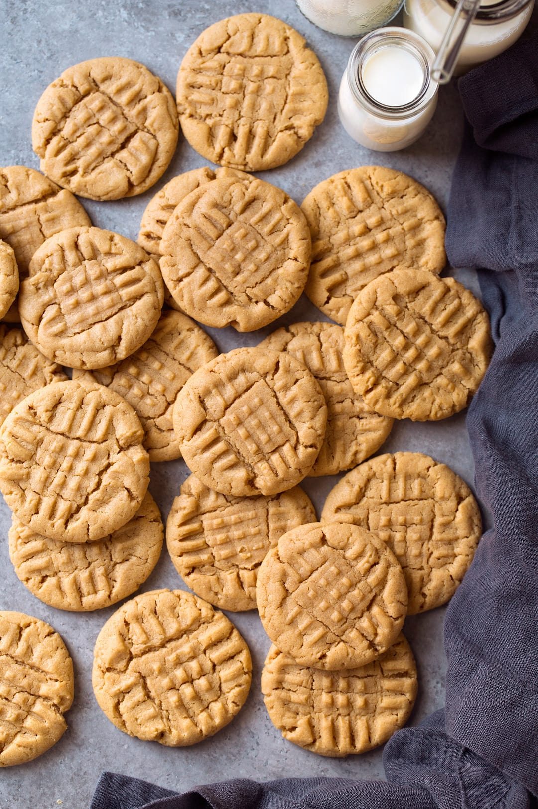

Dan's Famous Peanut Butter Cookies

Description
Peanut Butter Cookies, who could resist them? I've loved peanut butter cookies as long as I can remember and they'll always be one of my favorites.
So of course it only makes sense that I share my idea of the best peanut butter cookie recipe. This is my go-to recipe and best of all - it's only three ingredients!
Ingredients
- 1 cup of your favorite peanut butter
- 1/2 cup of sugar
- 1 large egg
Steps
- Preheat oven to 350º
- In a large bowl, mix together the peanut butter, sugar, and egg.
- Scoop out a spoonful of dough and roll it into a ball. Place the cookie balls onto a nonstick baking sheet.
- For extra decoration and to make them cook more evenly, flatten the cookie balls by pressing a fork down on top of them, then press it down again at a 90º angle to make a criss-cross pattern.
- Bake for 8-10 minutes or until the bottom of the cookies are golden brown.
- Remove from baking sheet and cool.
- Enjoy!